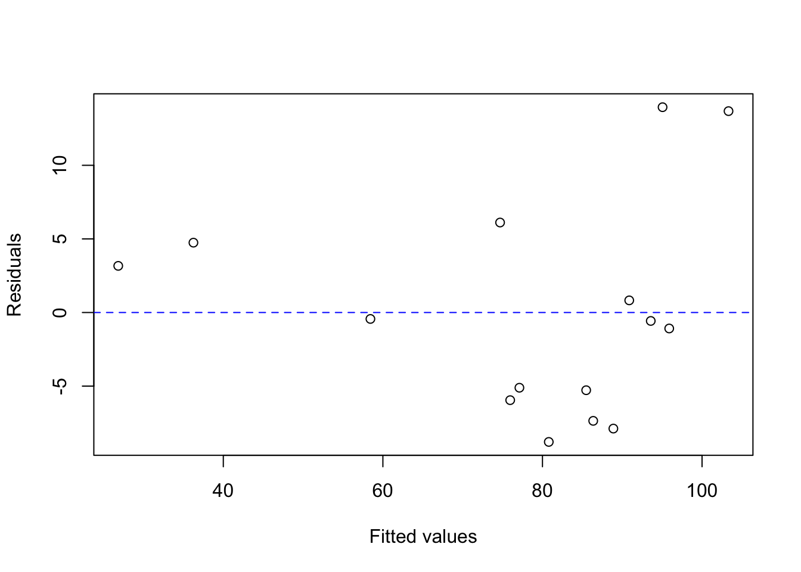
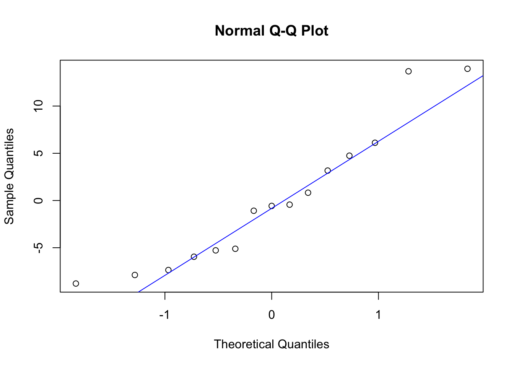

lima <- read.table("lima.txt", header = TRUE)ST 512 HW 2 - Savannah Harrison
#1
lima_model <- lm(ascorbic ~ cultivar + pct.dry, data = lima)
summary(lima_model)
Call:
lm(formula = ascorbic ~ cultivar + pct.dry, data = lima)
Residuals:
Min 1Q Median 3Q Max
-8.792 -5.617 -0.573 3.956 13.947
Coefficients:
Estimate Std. Error t value Pr(>|t|)
(Intercept) 211.0651 15.5761 13.551 3.31e-08 ***
cultivarb -5.9940 5.3296 -1.125 0.2847
cultivarc 13.5520 5.2001 2.606 0.0244 *
pct.dry -3.8542 0.4137 -9.317 1.49e-06 ***
---
Signif. codes: 0 '***' 0.001 '**' 0.01 '*' 0.05 '.' 0.1 ' ' 1
Residual standard error: 8.186 on 11 degrees of freedom
Multiple R-squared: 0.9005, Adjusted R-squared: 0.8734
F-statistic: 33.19 on 3 and 11 DF, p-value: 8.303e-06a) standard deviation of the residual errors = 8.186
b) C - Minimally plausible
c) p-value: 8.303e-06, test statistic: 1.49e-06
d) From the anova table, we would reject the null and conclude there is a difference between the ascorbic acid of plants from different cultivars when comparing plants with the same percent dry matter. F statistic: 6.3742, p-value: 0.0145
::: {.cell}
```{.r .cell-code}
anova(lima_model)
```
::: {.cell-output .cell-output-stdout}
```
Analysis of Variance Table
Response: ascorbic
Df Sum Sq Mean Sq F value Pr(>F)
cultivar 2 854.2 427.1 6.3742 0.01451 *
pct.dry 1 5817.3 5817.3 86.8157 1.491e-06 ***
Residuals 11 737.1 67.0
---
Signif. codes: 0 '***' 0.001 '**' 0.01 '*' 0.05 '.' 0.1 ' ' 1
```
:::
:::
e\)#Creating plot of the residuals vs. the fitted values
residualplot <- plot(x = fitted(lima_model), y = resid(lima_model), xlab = "Fitted values", ylab = "Residuals")
abline(h = 0, lty = "dashed", col = "blue")
#created Q-Q plot
QQplot <- qqnorm(y = resid(lima_model))
qqline(y = resid(lima_model), col = "blue")
- While it seems like there may be some small spread in the residual plot, it is not large enough to violate the constant error variance assumption. For the Q-Q plot, it looks like the ends might be drifting away from the line, but just like the residual plot, this discrepency is not large enough to violate the normality assumption.
#2
- (0.101,0.185)
#Estimate +- (SE)(Critical Value) df = 21
.143+(.020*2.0796)[1] 0.184592.143-(.020*2.0796)[1] 0.101408- YES
- NO
#3
When comparing two cereals with the same fat content, fiber content, and manufacturer, a cereal with 5 grams of sugar per serving will have a nutritional rating that is 3.58 smaller than a cereal with 3 grams of sugar per serving, on average.
-1.79*2[1] -3.58When comparing two cereals with the same fat content, fiber content, and sugar content, a cereal manufactured by Quaker (Q) will have a nutritional rating that is 4.44 larger than a cereal manufactured by General Mills (GM).
#4
29.14
fat = 0 fiber = 1.0 sugars = 14
50.23 + (-3.57*0) + (2.9*1.0) + (-1.79*14) + (1.07*1)[1] 29.14#5
4.06
#observed - predicted
33.2 - 29.14[1] 4.06#6
20.139
#(SS(Model)/df) / (SS(Error)/df)
(1270/3)/(1030/49)[1] 20.13916